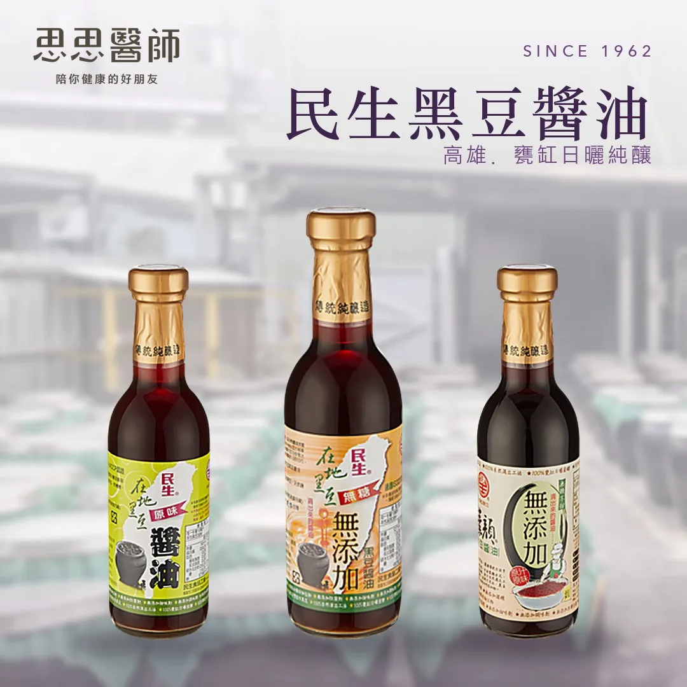
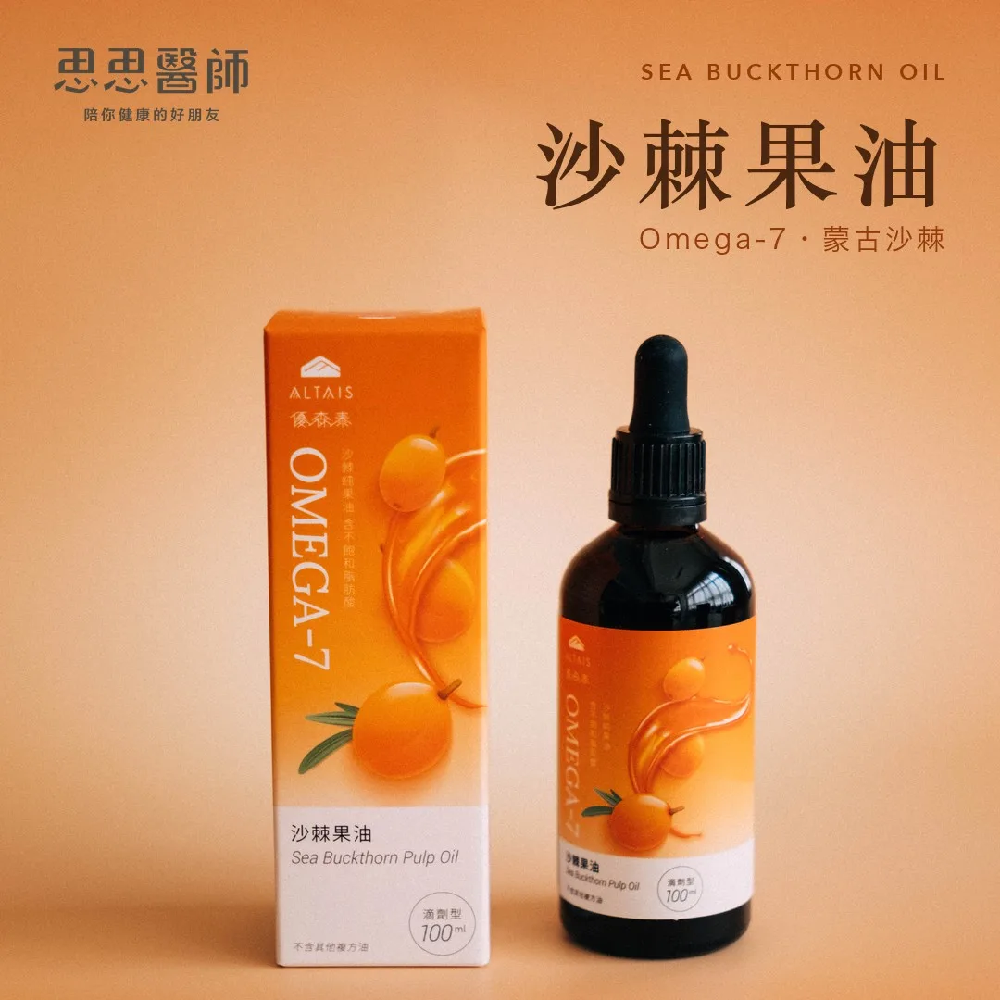
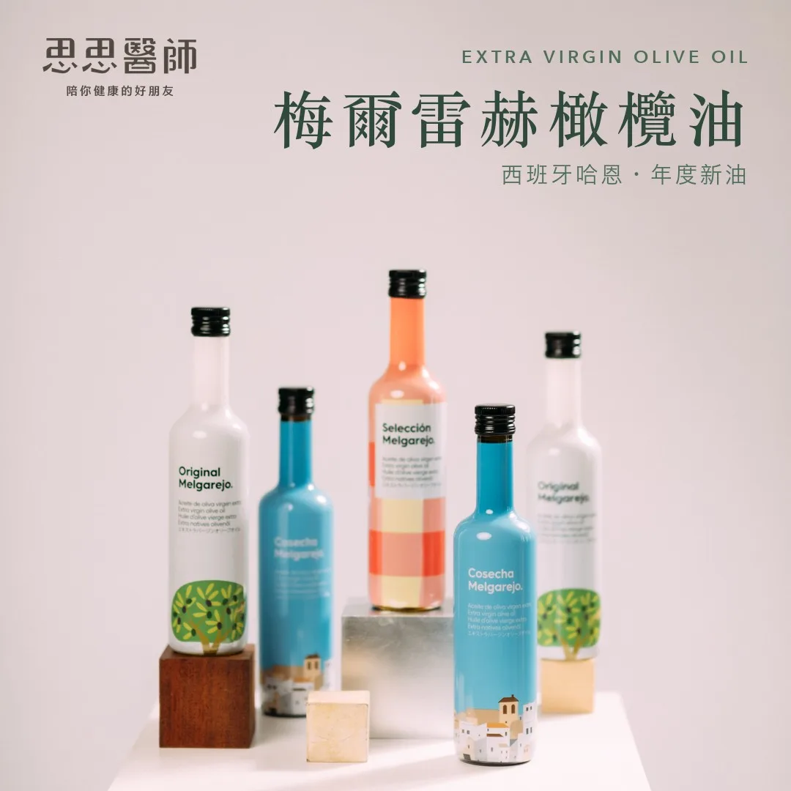
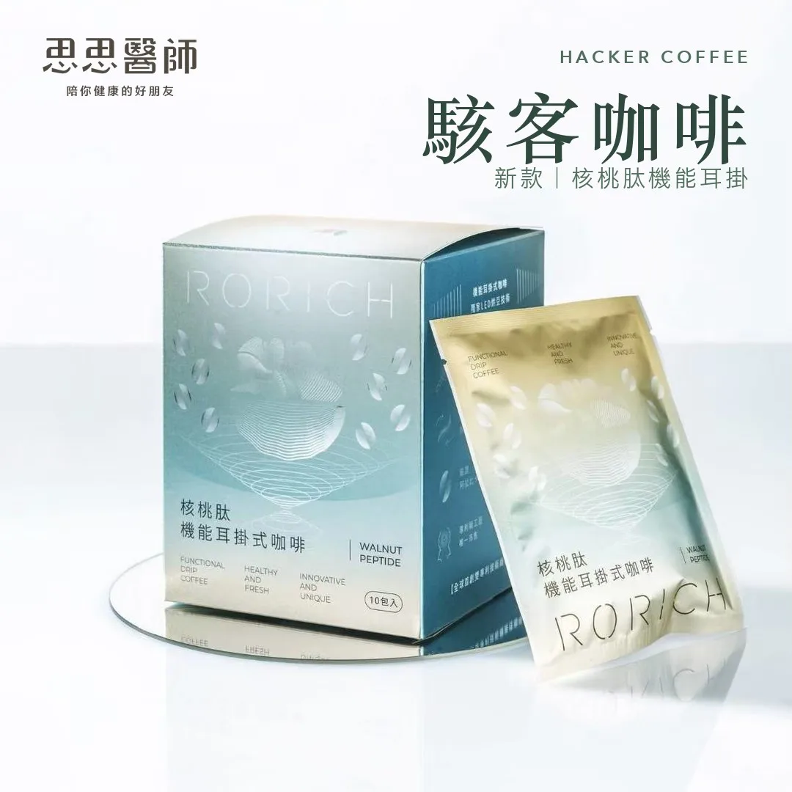

運動過量會導致心血管內的斑塊增加，但不是你想的那樣
運動是我在門診裡開得最多的處方之一。糖尿病、高血壓、代謝症候群，幾乎每位病人離開前我都會補一句「要記得規律運動」。但最近看了 Physionic 頻道（由分子醫學博士 Nicolas Verhoeven 主持）一支題為「More Exercise = More Plaque」的影片，讓我去找了原始文獻。讀完之後，我開始認真思考：幾十年如一日地做高強度耐力訓練，冠狀動脈（coronary artery）真的會因此更健康嗎？
這篇研究由比利時魯汶大學（KU Leuven）帶領，2023 年發表在《歐洲心臟期刊（European Heart Journal）》，正式標題是「Lifelong endurance exercise and its relation with coronary atherosclerosis」，計畫名稱 MASTER Study。研究招募 558 位 45 到 70 歲的男性，全部低心血管風險、不抽菸、無已知疾病史，分成三組：終身運動者（30 歲前開始、每週約 11 小時、持續數十年）、晚起步運動者（30 歲後才開始、訓練量相近）、以及每週僅約 1 小時的健康對照組。研究者對所有人進行冠狀動脈電腦斷層血管攝影（CCTA），直接評估斑塊的數量、位置與組成。
結果出乎許多人的預期。終身運動者出現斑塊的比例顯著高於對照組，勝算比（Odds Ratio）1.86。相對穩定的鈣化斑塊（calcified plaque）增加了，非鈣化斑塊（non-calcified plaque）同樣增加，勝算比 1.95。位於冠狀動脈近端（proximal segment）的非鈣化斑塊，勝算比更達 2.80。近端位置的意義在於，這裡一旦出問題，波及範圍和後果往往更嚴重。研究者的結論很直接：終身耐力運動既不會讓斑塊的組成變得更安全，也不會讓斑塊更少。
然而，研究還有另一面。最危險的易破裂斑塊（vulnerable plaque），在長年運動者身上反而顯著較少，勝算比僅 0.11。易破裂斑塊的纖維帽薄、核心含液態脂質，是誘發急性心肌梗塞的主要元兇，斑塊破裂後觸發血栓、堵塞血管。換句話說，長年運動者有更多斑塊是事實，但最致命的那一類卻反而更少。這是 MASTER Study 最值得深思的地方，也是為什麼我們不能輕率地說「運動多了就更危險」。
目前研究者對斑塊形成機制，最主要的假說指向血流剪切力（shear stress）。Rhonda Patrick 博士在討論運動與心血管健康時，曾強調一個核心機制：適度運動產生的規律剪切力，會刺激血管內皮細胞上調內皮一氧化氮合酶（eNOS），大量釋放一氧化氮（NO），進而擴張血管、抑制發炎、保護內皮。這是運動對心血管系統最重要的保護機制之一。但問題在於「劑量」。當耐力運動量達到每週 10 小時以上、持續數十年，心臟每次輸出的血量大幅提升，冠狀動脈反覆承受高幅度的動壓剪切力，血管壁開始累積微損傷，修復過程中就可能伴隨動脈粥狀硬化（atherosclerosis）的形成。規律、適度的剪切力是血管的保護者；但長年極端的剪切力，卻可能成為另一種慢性刺激。
2026 年，同一團隊在《Circulation》發表後續追蹤，以穿戴式裝置客觀記錄受試者 12 個月的實際訓練數據。關鍵發現是：讓斑塊增加的是累積訓練時數，而非強度。訓練量最高的四分位（Q4）與最低組相比，出現冠狀動脈斑塊的勝算比高達 5.85。研究同時揭示，自我回報的訓練量與穿戴裝置的客觀數據之間存在明顯落差，問卷很難準確反映這個劑量反應關係。
這份研究有幾個限制。受試者全為男性、白人族群，屬於橫斷面設計（cross-sectional），無法推論因果，也無法直接套用到女性或其他族裔。目前尚無死亡率或心血管事件的長期追蹤資料，研究團隊表示將延長觀察期。此外，結論不適用於以阻力訓練（resistance training）為主的族群，兩者的生理刺激路徑不同。
這個研究不是在勸你停止運動。每週幾小時規律耐力訓練，對心血管的效益仍然遠大於久坐。MASTER Study 描述的是每週超過 10 小時、持續數十年的高訓練量族群，也就是馬拉松跑者、長年鐵人三項選手、職業或半職業等級的自行車手。但如果你確實屬於這個族群，定期進行冠狀動脈鈣化分數（Coronary Artery Calcium Score，CAC）篩檢，是合理的主動監控手段，讓你有客觀數據了解血管狀態，而不是靠「我練這麼多，一定很健康」這樣的直覺。運動量和健康效益之間的關係，並非永遠線性。
運動員的心臟在很多面向上確實比一般人更強壯。但「更強壯」和「沒有任何代謝代價」，是兩回事。
 空腹小雞跟思思醫師一起斷食，順便養一隻小雞來養小雞 →
空腹小雞跟思思醫師一起斷食，順便養一隻小雞來養小雞 →
好朋友週信
每週五一封：《健康駭客週報》這集的研究重點，加上家醫專欄這週的新文章。免費，隨時可以退訂。
延伸閱讀

飯後的血液指標，有時候比飯前更重要
飯後血液指標反映胰島素反應與代謝控制的實際狀況，往往比飯前數值更能說明真實身體狀態。

LDL 其實沒有想像中穩定，你可以用 72 小時改變它
LDL 受抽血前約 72 小時飲食影響，Dave Feldman 改吃白吐司七天讓 LDL 從 296 降到 83 mg/dL，單次數值代表性有限。

膽固醇 700 維持七年，斑塊是零的特殊案例
一位總膽固醇 705 mg/dL 的男性維持近七年，電腦斷層顯示斑塊體積為 0 mm³，作者以此個案介紹 LMHR 與脂質能量模型。
商品推薦
三日苗｜超級青花椰苗（思思特惠組）

民生黑豆醬油｜高雄甕缸日曬純釀

優森泰沙棘果油｜少見的脂肪酸 Omega-7

抗藍光眼鏡｜涵蓋 400–500 奈米整個藍光波段

福爾 MD6 六合一檢測系統

aceto 燃朋友 氣酮機｜呼一口氣，看見燃脂狀態

14 天血糖探索計畫｜智抗糖 App × CGM 連續血糖監測

梅爾雷赫橄欖油｜西班牙哈恩 25/26 年度新油

FORA RING 福爾智慧戒指｜不到 4 公克的睡眠追蹤

天然來源保健品｜維他命 B、C、葉黃素、鋅硒、薑黃
新雨農場｜魚菜共生生菜・放牧雞蛋

亮王低藍光護眼燈泡｜2800K・低閃頻
